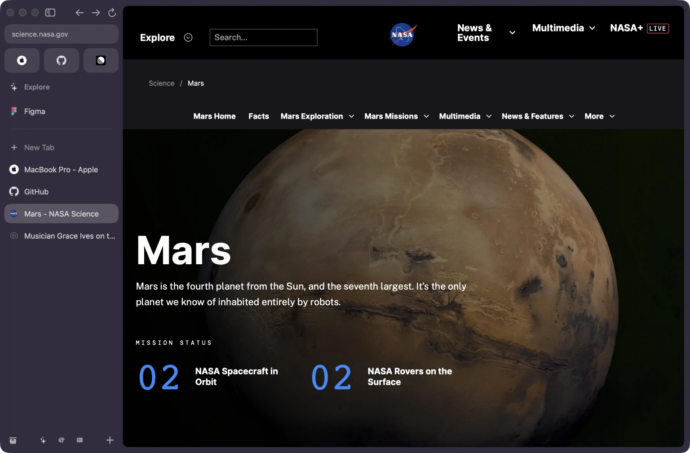
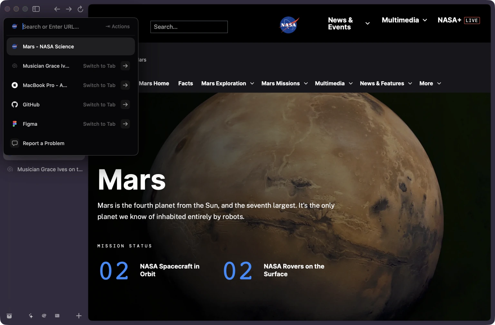
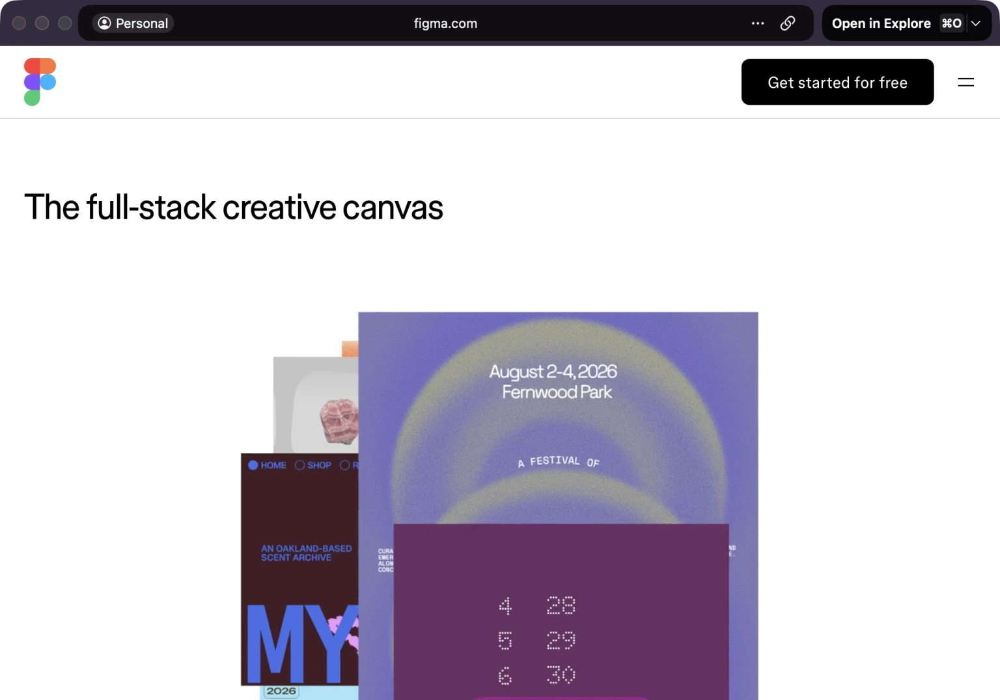
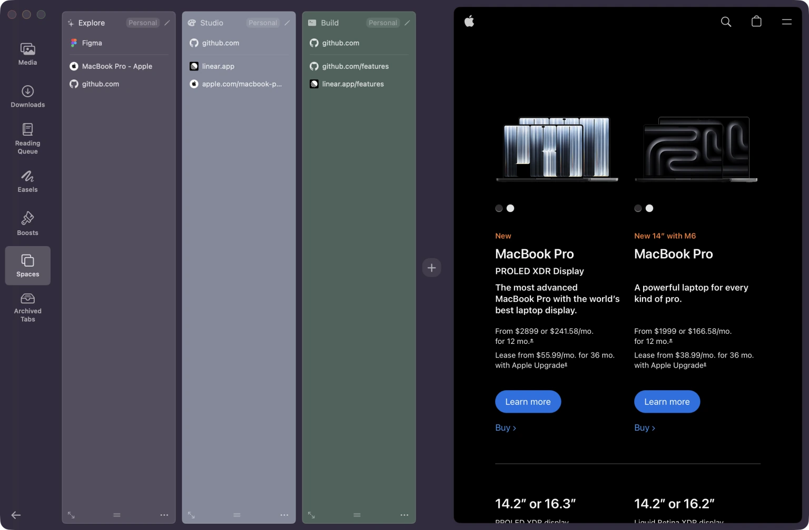

Spaces
Keep work, browsing, and projects in separate Spaces. Each has its own tabs, colour and profile.
How Spaces work
Make room for the way you browse: Spaces, side-by-side pages, and a little window when you need one. This page follows current development; published releases may differ.
Keep work, browsing, and projects in separate Spaces. Each has its own tabs, colour and profile.
How Spaces work
Put a second page beside the current one. Up to four panes share one row in the sidebar.
Using Split View
⌘L or ⌘T opens one bar to enter an address, search the web or switch to a tab that is already open.
The address bar
A small single-page window for a quick look. Its menu moves the page into your main window.
Meet Little Vane
See your Spaces together, next to archived tabs, downloads and the Reading Queue.
Tabs and the Library
A command palette, a tab switcher, and familiar Mac shortcuts you can make your own.
Every keyboard shortcutYour GitHub pull requests, kept together in the sidebar. They refresh as work opens, changes, and closes.
How Live Folders workReader mode clears the page around the words. Adjust its type, or save supported articles to the Reading Queue for offline reading.
Reading and Picture in PictureKeep watching in Picture in Picture. A tab playing detached video stays awake.
Save, manage, and fill passwords through the macOS keychain. Separate profiles, separate credentials.
Password detailsBuilt-in ad and tracker blocking, private windows, and camera and microphone decisions per site.
Privacy and blockingBring history and bookmarks from other browsers, supported Arc Spaces and sessions, or passwords from CSV. Review the source before importing.
What you can importSession restore, archived tabs, and crash recovery help you return to the pages you were using.
Tabs and the LibraryInstall supported Chrome Web Store, unpacked WebExtensions, or signed Safari extensions. Inspect pages with Web Inspector, console, and View Source.
For developersPause, resume, find a file in Finder, and choose where downloads land. Browse saved records in the Library.
Getting startedSwiftUI, AppKit, and system WebKit. Native settings, menus, VoiceOver labels, and reduced motion support.
Explore the sourceChoose the library categories to sync in a provisioned build. Sync starts off; website sign-ins and downloaded files stay local.
Sync controls and limitsChoose on-device Apple, your own API connection, or an eligible ChatGPT connection for each AI feature. AI starts off until enabled.
Set up MaxPreview a page from its link. When Max and a summary connection are available, the card can add a short page summary.
Link previews and summariesFree and open source, for macOS 26 or later. Bring your bookmarks and history with you.
Download VaneVane is in active development. Release notes